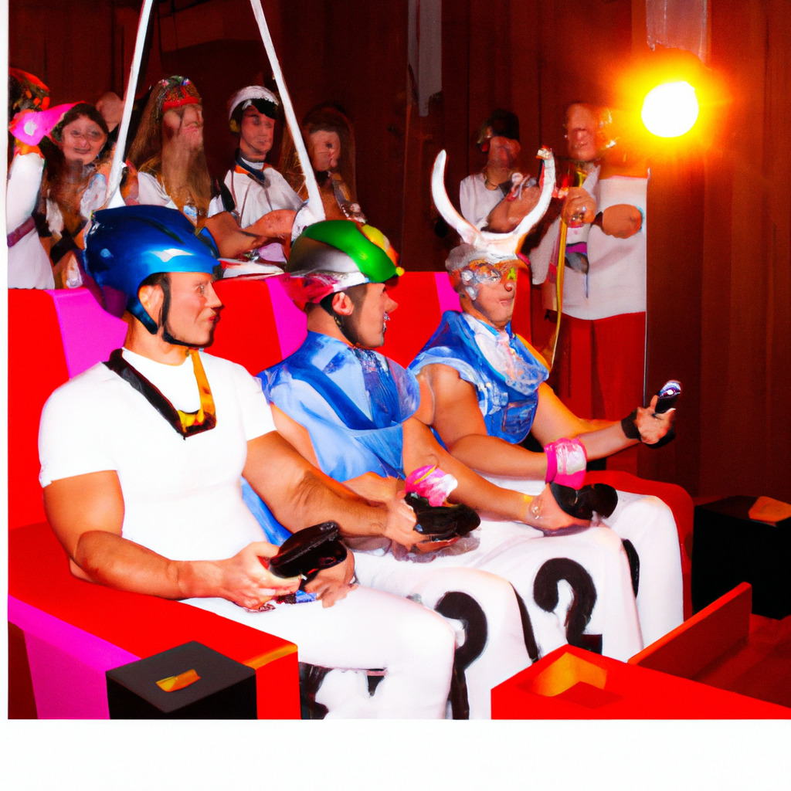

April 9, 2023 - olympicsportswire.com
In a surprising turn of events, the International Olympic Committee (IOC) has announced the addition of "Doomscrolling" as an official sport in the upcoming Olympic Games. This decision comes as a response to the growing trend of people spending hours on end scrolling through endless feeds of negative news and social media updates on their smartphones and other devices.
The IOC has been closely monitoring the rise of Doomscrolling, especially since the global pandemic began in early 2020. The practice of scrolling through countless streams of negative news has been linked to increased stress, anxiety, and overall mental health concerns. Despite the potential risks, the IOC believes that incorporating Doomscrolling into the Olympic Games will bring attention to the issue and promote a healthy discussion around the topic.
Rules and Scoring
Competitors will be judged based on their ability to efficiently scroll through a custom-built feed filled with negative news and content. The feed will be updated in real-time to ensure a fair and consistent competition. Contestants will be scored on their scrolling speed, accuracy in identifying newsworthy content, and their ability to remain focused and composed throughout the event. Each participant will be given a specific time limit, and the one with the highest score at the end will be declared the winner.
Controversy and Debate
The decision to include Doomscrolling as an Olympic sport has been met with mixed reactions. Critics argue that it glorifies an unhealthy habit and may encourage people to engage in more doomscrolling instead of addressing the mental health consequences. They also contend that it deviates from the traditional physical and skill-based nature of Olympic events.
Supporters, on the other hand, believe that incorporating Doomscrolling into the Olympic Games is a bold step towards acknowledging and confronting the impact of technology on mental health. They argue that the competition will provide a platform for raising awareness about the dangers of doomscrolling and promote a global conversation on finding healthier ways to consume news and engage with social media.
Preparing for the Competition
As the inaugural Doomscrolling Olympic event draws closer, competitors from around the world are preparing themselves for this unique challenge. Many are employing mindfulness techniques and stress management strategies to maintain focus and emotional balance during the competition. In addition, some participants have sought the guidance of psychologists and digital wellness experts to better understand the phenomenon of doomscrolling and develop healthy coping mechanisms.
The Future of Doomscrolling in the Olympics
The inclusion of Doomscrolling as an Olympic sport has undoubtedly sparked a global debate about the role of technology in our lives and its impact on our mental health. As the first Doomscrolling competition unfolds, the world will be watching closely to determine whether this unconventional event will remain a fixture in future Olympic Games or serve as a one-time experiment designed to foster discussion and awareness about an increasingly prevalent issue.